POWER RANKINGS: WHO IMPRESSED OUR JUDGES AMID THE DRAMA AT ZANDVOORT?
Find out which drivers featured in the Power Rankings top 10 with their perfomances at the Dutch Grand Prix.

It was a dramatic weekend at Zandvoort, with Oscar Piastri winning, team mate Lando Norris retiring, Isack Hadjar scoring a maiden podium finish and Ferrari suffering a double DNF. So, who impressed our judges through it all? Check out the latest scores and overall leaderboard below...
HOW IT WORKS
- Our five-judge panel assess each driver after every Grand Prix and score them out of 10 according to their performance across the weekend – taking machinery out of the equation
- Our experts’ scores are then averaged out to produce a race score – with those scores then tallied up across the season on our overall Power Rankings Leaderboard (at the bottom of the page)
Hadjar kicked off his rookie F1 season in painful circumstances with a formation lap spin at the Australian Grand Prix, but since then the French youngster has starred with Racing Bulls. He reached new heights at Zandvoort via a stunning run to fourth in Qualifying, defending that position brilliantly before taking advantage of Norris’ retirement to score a maiden podium.
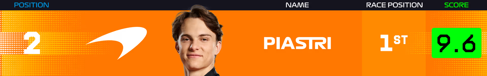Piastri trailed McLaren team mate Norris during practice around the Dutch dunes but delivered when it matter to bag pole position in Qualifying. He expertly controlled proceedings in the race to earn a ninth career victory, tying manager manager Mark Webber’s career total, while completing the first ‘Grand Slam’ – pole, win, fastest lap and every lap led – for a McLaren driver since Mika Hakkinen at the 1998 Monaco Grand Prix.
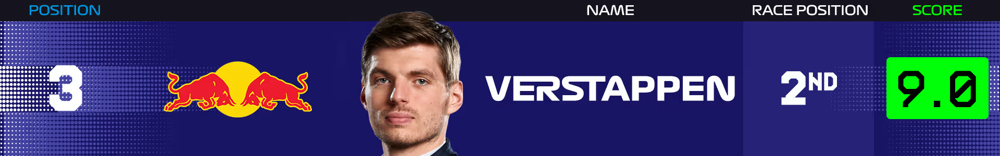Heading into the weekend, Max Verstappen knew it would be a challenge to add to the Zandvoort wins he achieved in 2021, 2022 and 2023, given McLaren’s level of performance this season. It proved to be the case, despite an inspired Qualifying effort that saw him set the fastest middle sector split. He was running a strong third to Piastri and Norris on an off-set strategy when the latter hit trouble and retired – giving the Dutchman a bonus P2 result.
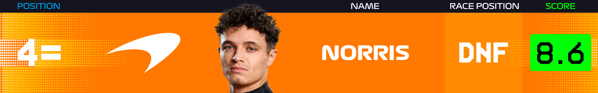Norris looked like the man to beat at the start of the event, having confidently topped FP1, FP2 and FP3. However, it was team mate Piastri who grabbed pole by 0.012s in another ultra-close Qualifying session, before Norris lost further ground at the start when Verstappen slipped ahead. The Briton fought back well to reclaim second and then put some pressure on Piastri, only for his hopes to go up in smoke.
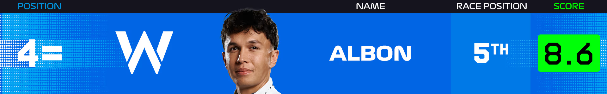Having started his weekend inside the top five in practice, Albon was understandably frustrated with a Q2 elimination in Qualifying – the Williams driver’s final run not going to plan. However, he came back fighting on an overcast and drizzly race day, making up five positions at the start, capitalising on incidents and Safety Cars and ultimately coming away with a P5 result.
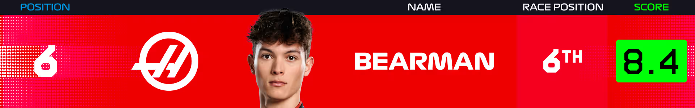Bearman was another disappointed driver after Qualifying, having dropped out in Q1 in 19th – ahead of only the sidelined Lance Stroll. He was then shifted to the pit lane for the start due to taking on a host of new power unit elements pre-race. From there, the only way was forward, and the Haas rookie calmly navigated the aforementioned drama to follow Albon home in a fine sixth place.
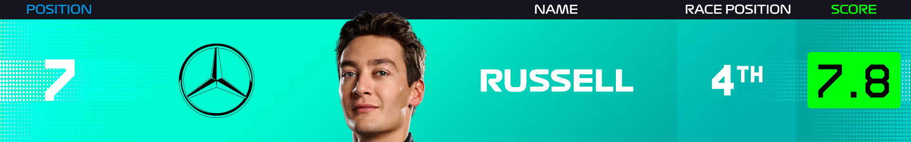After keeping up his run of qualifying inside the top-six places at every round apart from Monaco so far this season, Russell experienced an eventful race day at Zandvoort. A tricky start for the Mercedes man was followed by a collision with Ferrari rival Charles Leclerc – the subsequent damage costing him around a second a lap. While he took “zero satisfaction” from his afternoon at the wheel, fourth still represented a solid return.
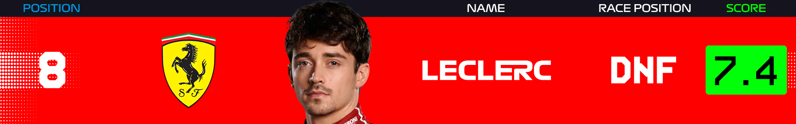A downbeat Leclerc had labelled Ferrari’s Friday in the Netherlands their worst of the season, adding that the team needed a “miracle” to turn the situation around. The Monegasque found a way into the top six in Qualifying, though, and was looking lively in the race – underlined by that aggressive move on Russell – to challenge for a solid haul of points. However, a second clash with the other Silver Arrow of Kimi Antonelli, following an extra pit stop that he had questioned, ended his day.
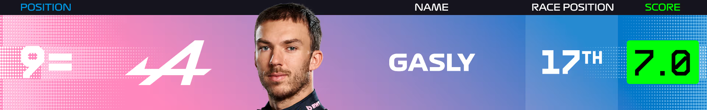Across a tough season for Alpine, Pierre Gasly has managed to pull some impressive results out of the bag and give the team something to shout about. The Frenchman – having qualified 14th – came close to doing so again at Zandvoort, but the call to maintain track position under the final Safety Car backfired and left him exposed to rivals who had pitted for fresh rubber. “Sometimes these things work out, sometimes they do not,” as he put it afterwards.
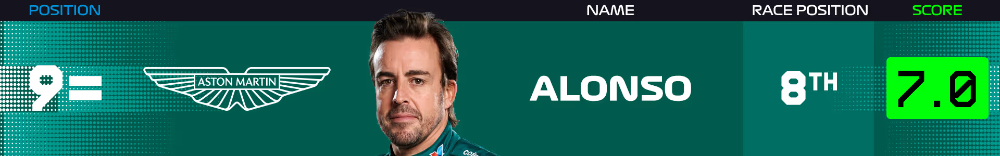Fernando Alonso and Aston Martin caught the eye when they split the McLarens of Norris and Piastri during second practice, raising hopes of a podium push. It did not quite work out that way, with Alonso getting overhauled by quicker cars in Qualifying and team mate Stroll finding the wall. On race day, despite frustrations over the timing of his pit stops and losing time in traffic, Alonso managed to top up his points tally in eighth.
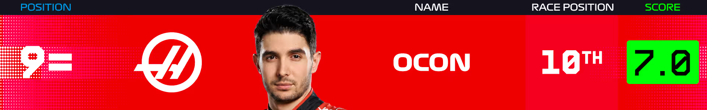Like Bearman, Esteban Ocon fell at the first Qualifying hurdle after a mistake on his final Q1 run, giving Haas plenty to do in the race. He joined his team mate in moving up the order, though, and made it a double points finish by fending off Alpine’s Franco Colapinto late on and crossing the line in 10th position.
MISSING OUT
Colapinto just missed out on a spot in the Power Rankings top 10 on what was a more encouraging weekend from the Argentinian, along with Liam Lawson, who was in points contention aboard the other Racing Bulls car until a clash with Carlos Sainz.
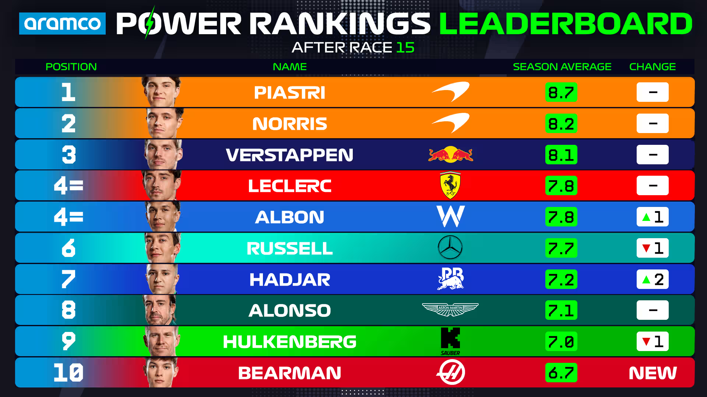